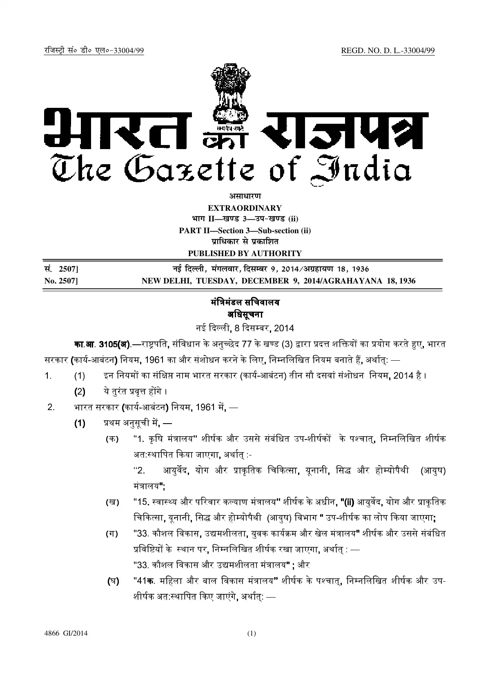
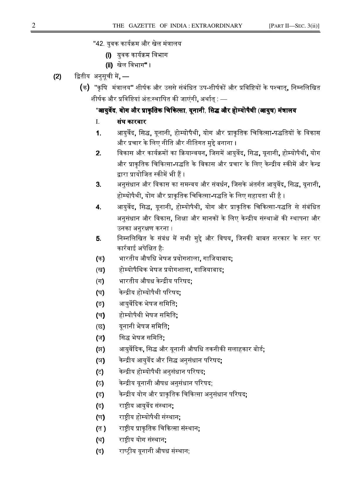
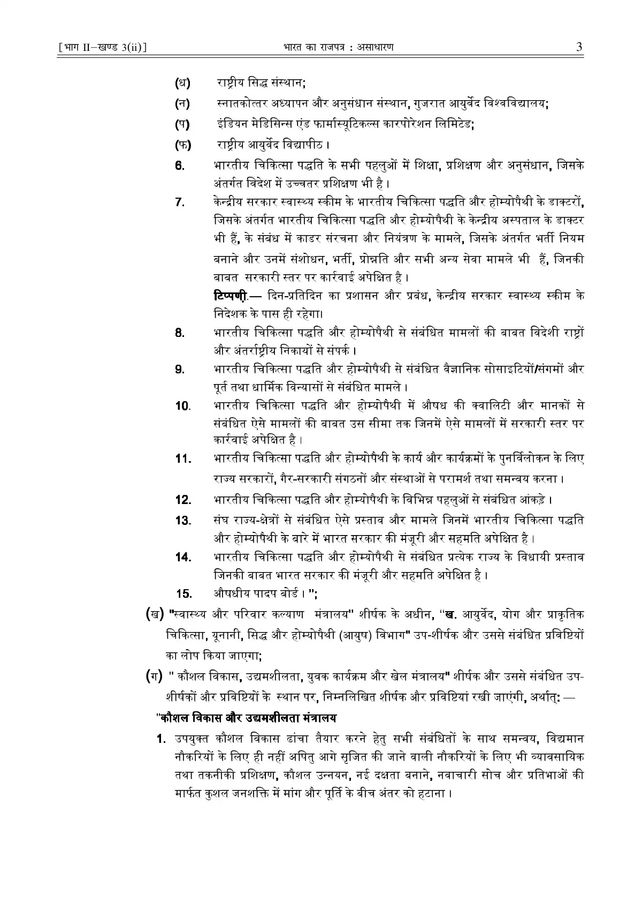
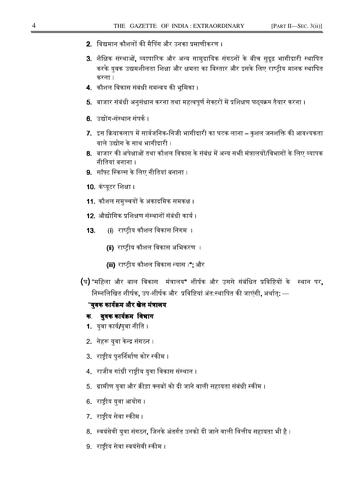
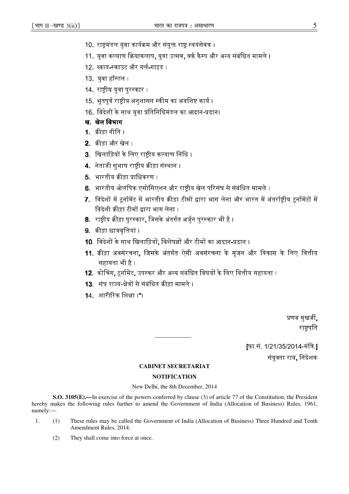
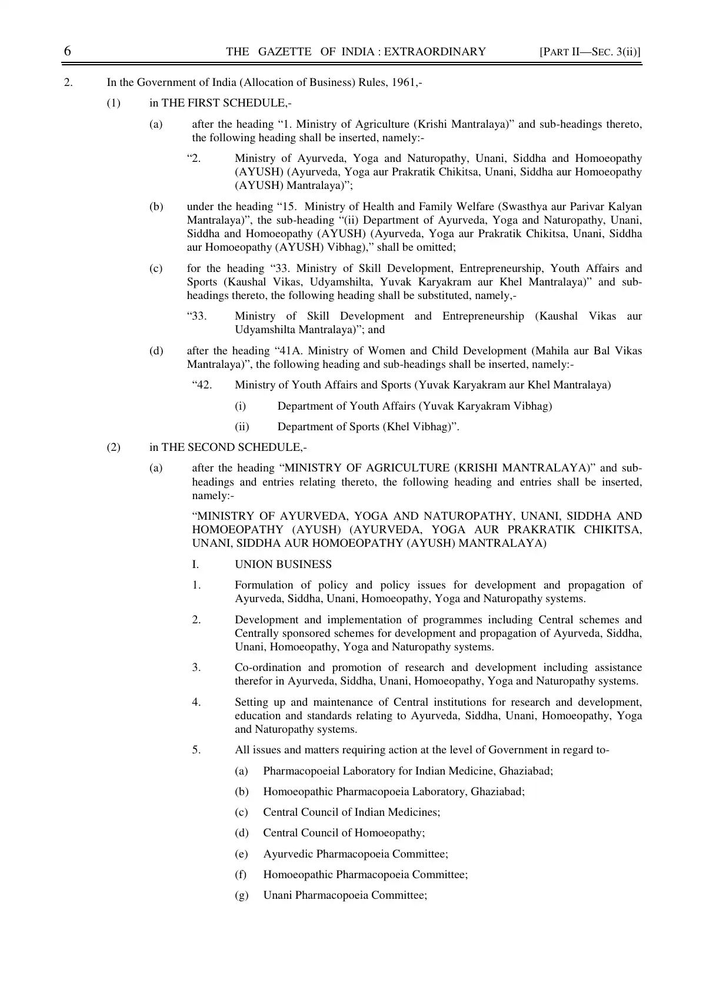
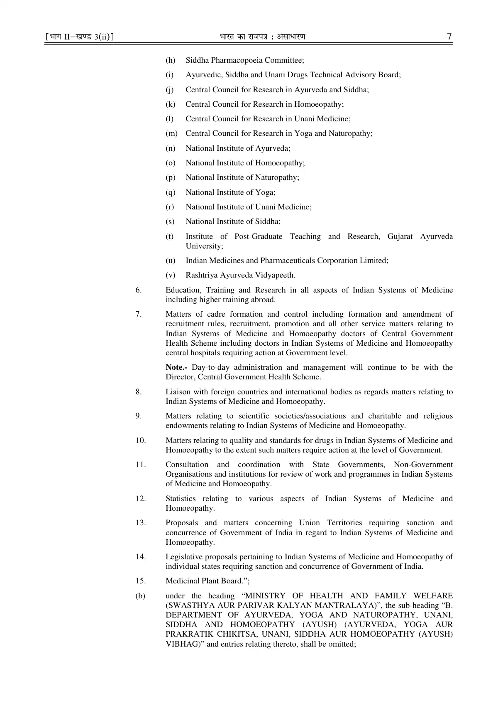
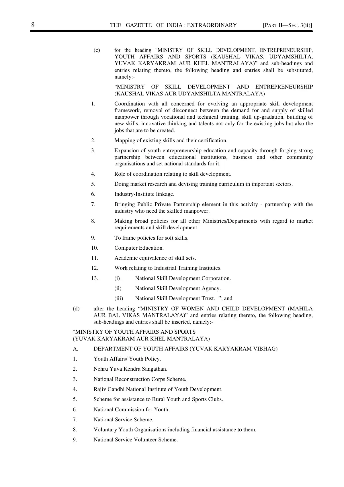
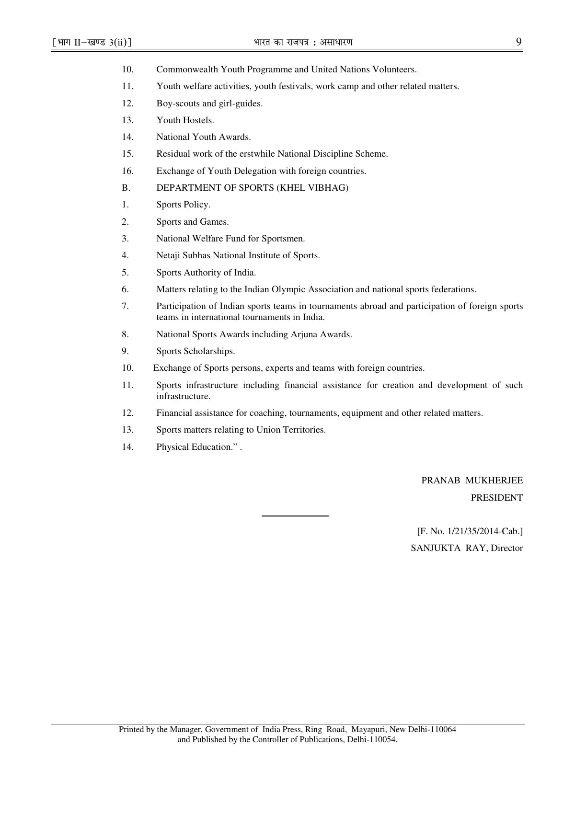

Amendment #310 (S.O. 3105(E), 2014)
8 changes: 4 to the First Schedule, 4 to the Second Schedule. 8 applied
What it did to the ministries
- splitSkills and Sports, joined in July, divide in December. change 3, 4, 7, 8 · histories: Skills, Youth & Sports, Youth Affairs and Sports, Skill Development
- spun offAYUSH buds off Health and Family Welfare. change 1, 2, 5, 6 · histories: Health and Family Welfare, Ayush
The order, page by page
Page 1 of 9

Page 2 of 9

Page 3 of 9

Page 4 of 9

Page 5 of 9

Page 6 of 9

12345after Schedule 1 › Ministry of Agriculture
- 2. Ministry of Ayurveda, Yoga and Naturopathy, Unani, Siddha and Homoeopathy (AYUSH)
applied at schedule 1 › ministry 2 in the Rules after #310
Schedule 1 › Ministry of Health and Family Welfare › Department of Ayurveda, Yoga and Naturopathy, Unani, Siddha and Homoeopathy (AYUSH)
applied at schedule 1 › ministry 15 › department ii in the Rules after #310
Schedule 1 › Ministry of Skill Development, Entrepreneurship, Youth Affairs and Sports
- 33. Ministry of Skill Development and Entrepreneurship
applied at schedule 1 › ministry 33 in the Rules after #310
after Schedule 1 › Ministry of Women and Child Development
- 42. Ministry of Youth Affairs and Sports
- i. Department of Youth Affairs
- ii. Department of Sports
applied at schedule 1 › ministry 42 in the Rules after #310
after Schedule 2 › MINISTRY OF AGRICULTURE
- MINISTRY OF AYURVEDA, YOGA AND NATUROPATHY, UNANI, SIDDHA AND HOMOEOPATHY (AYUSH)
- I. UNION BUSINESS
- 1. Formulation of policy and policy issues for development and propagation of Ayurveda, Siddha, Unani, Homoeopathy, Yoga and Naturopathy systems.
- 2. Development and implementation of programmes including Central schemes and Centrally sponsored schemes for development and propagation of Ayurveda, Siddha Unani, Homoeopathy, Yoga and Naturopathy systems.
- 3. Co-ordination and promotion of research and development including assistance therefor in Ayurveda, Siddha, Unani, Homoeopathy, Yoga and Naturopathy systems.
- 4. Setting up and maintenance of Central institutions for research and development education and standards relating to Ayurveda, Siddha, Unani, Homoeopathy, Yoga and Naturopathy systems.
and 34 more
- 5. All issues and matters requiring action at the level of Government in regard to-
- a. Pharmacopoeial Laboratory for Indian Medicine, Ghaziabad
- b. Homoeopathic Pharmacopoeia Laboratory, Ghaziabad
- c. Central Council of Indian Medicines
- d. Central Council of Homoeopathy
- e. Ayurvedic Pharmacopoeia Committee
- f. Homoeopathic Pharmacopoeia Committee
- g. Unani Pharmacopoeia Committee
- h. Siddha Pharmacopoeia Committee
- i. Ayurvedic, Siddha and Unani Drugs Technical Advisory Board
- j. Central Council for Research in Ayurveda and Siddha
- k. Central Council for Research in Homoeopathy
- l. Central Council for Research in Unani Medicine
- m. Central Council for Research in Yoga and Naturopathy
- n. National Institute of Ayurveda
- o. National Institute of Homoeopathy
- p. National Institute of Naturopathy
- q. National Institute of Yoga
- r. National Institute of Unani Medicine
- s. National Institute of Siddha
- t. Institute of Post-Graduate Teaching and Research, Gujarat Ayurveda University
- u. Indian Medicines and Pharmaceuticals Corporation Limited
- v. Rashtriya Ayurveda Vidyapeeth.
- 6. Education, Training and Research in all aspects of Indian Systems of Medicine including higher training abroad.
- 7. Matters of cadre formation and control including formation and amendment of recruitment rules, recruitment, promotion and all other service matters relating to Indian Systems of Medicine and Homoeopathy doctors of Central Government Health Scheme including doctors in Indian Systems of Medicine and…
- Note.- Day-to-day administration and management will continue to be with the Director, Central Government Health Scheme.
- 8. Liaison with foreign countries and international bodies as regards matters relating to Indian Systems of Medicine and Homoeopathy.
- 9. Matters relating to scientific societies/associations and charitable and religious endowments relating to Indian Systems of Medicine and Homoeopathy.
- 10. Matters relating to quality and standards for drugs in Indian Systems of Medicine and Homoeopathy to the extent such matters require action at the level of Government.
- 11. Consultation and coordination with State Governments, Non-Government Organisations and institutions for review of work and programmes in Indian Systems of Medicine and Homoeopathy.
- 12. Statistics relating to various aspects of Indian Systems of Medicine and Homoeopathy.
- 13. Proposals and matters concerning Union Territories requiring sanction and concurrence of Government of India in regard to Indian Systems of Medicine and Homoeopathy.
- 14. Legislative proposals pertaining to Indian Systems of Medicine and Homoeopathy of individual states requiring sanction and concurrence of Government of India.
- 15. Medicinal Plant Board.
applied at schedule 2 › ministry MINISTRY OF AYURVEDA, YOGA AND NATUROPATHY, UNANI, SIDDHA AND HOMOEOPATHY (AYUSH) in the Rules after #310
read page break
Page 7 of 9

6Schedule 2 › MINISTRY OF HEALTH AND FAMILY WELFARE › DEPARTMENT OF AYURVEDA, YOGA AND NATUROPATHY, UNANI, SIDDHA AND HOMOEOPATHY (AYUSH)
applied at schedule 2 › ministry MINISTRY OF HEALTH AND FAMILY WELFARE › department B in the Rules after #310
Page 8 of 9

78Schedule 2 › MINISTRY OF SKILL DEVELOPMENT, ENTREPRENEURSHIP, YOUTH AFFAIRS AND SPORTS
- MINISTRY OF SKILL DEVELOPMENT AND ENTREPRENEURSHIP
- 1. Coordination with all concerned for evolving an appropriate skill development framework, removal of disconnect between the demand for and supply of skilled manpower through vocational and technical training, skill up-gradation, building of new skills, innovative thinking and talents not only for…
- 2. Mapping of existing skills and their certification.
- 3. Expansion of youth entrepreneurship education and capacity through forging strong partnership between educational institutions, business and other community organisations and set national standards for it.
- 4. Role of coordination relating to skill development.
- 5. Doing market research and devising training curriculum in important sectors.
and 11 more
- 6. Industry-Institute linkage.
- 7. Bringing Public Private Partnership element in this activity - partnership with the industry who need the skilled manpower.
- 8. Making broad policies for all other Ministries/Departments with regard to market requirements and skill development.
- 9. To frame policies for soft skills.
- 10. Computer Education.
- 11. Academic equivalence of skill sets.
- 12. Work relating to Industrial Training Institutes.
- 13.
- i. National Skill Development Corporation.
- ii. National Skill Development Agency.
- iii. National Skill Development Trust.
applied at schedule 2 › ministry MINISTRY OF SKILL DEVELOPMENT, ENTREPRENEURSHIP, YOUTH AFFAIRS AND SPORTS in the Rules after #310
after Schedule 2 › MINISTRY OF WOMEN AND CHILD DEVELOPMENT
- MINISTRY OF YOUTH AFFAIRS AND SPORTS
- A. DEPARTMENT OF YOUTH AFFAIRS
- 1. Youth Affairs/ Youth Policy.
- 2. Nehru Yuva Kendra Sangathan.
- 3. National Reconstruction Corps Scheme.
- 4. Rajiv Gandhi National Institute of Youth Development.
and 27 more
- 5. Scheme for assistance to Rural Youth and Sports Clubs.
- 6. National Commission for Youth.
- 7. National Service Scheme.
- 8. Voluntary Youth Organisations including financial assistance to them.
- 9. National Service Volunteer Scheme.
- 10. Commonwealth Youth Programme and United Nations Volunteers.
- 11. Youth welfare activities, youth festivals, work camp and other related matters.
- 12. Boy-scouts and girl-guides.
- 13. Youth Hostels.
- 14. National Youth Awards.
- 15. Residual work of the erstwhile National Discipline Scheme.
- 16. Exchange of Youth Delegation with foreign countries.
- B. DEPARTMENT OF SPORTS
- 1. Sports Policy.
- 2. Sports and Games.
- 3. National Welfare Fund for Sportsmen.
- 4. Netaji Subhas National Institute of Sports.
- 5. Sports Authority of India.
- 6. Matters relating to the Indian Olympic Association and national sports federations.
- 7. Participation of Indian sports teams in tournaments abroad and participation of foreign sports teams in international tournaments in India.
- 8. National Sports Awards including Arjuna Awards.
- 9. Sports Scholarships.
- 10. Exchange of Sports persons, experts and teams with foreign countries.
- 11. Sports infrastructure including financial assistance for creation and development of such infrastructure.
- 12. Financial assistance for coaching, tournaments, equipment and other related matters.
- 13. Sports matters relating to Union Territories.
- 14. Physical Education.
applied at schedule 2 › ministry MINISTRY OF YOUTH AFFAIRS AND SPORTS in the Rules after #310
read page break
Page 9 of 9

How this document was read
From the Government of India (Allocation of Business) Rules, 1961 and their amendments, as published by the Cabinet Secretariat (cabsec.gov.in), read by orgpedia. The readings of the older scanned gazettes have known gaps.